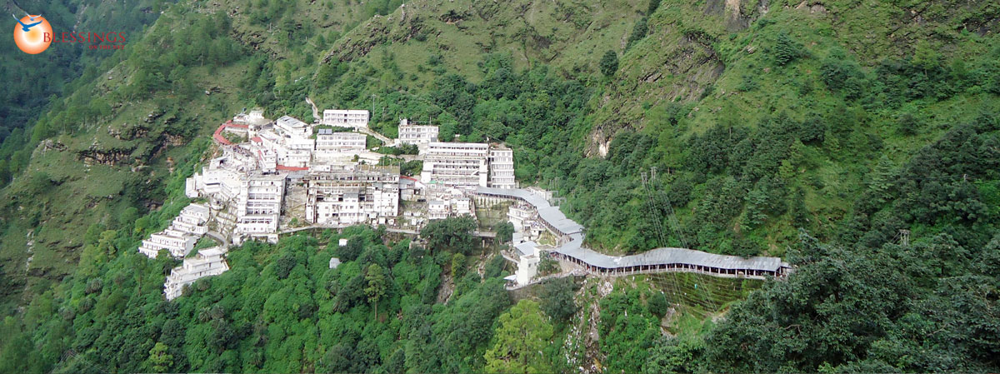

Vaishno Devi

Vaishno Devi, also known as Mata Rani, Trikuta and Vaishnavi, is a manifestation of the Hindu Mother Goddess of MahaKali, MahaSaraswati and MahaLakshmi. The words ""maa" and "mata" are commonly used in India for "mother", and thus are often used in connection with Vaishno Devi. Vaishno Devi Mandir is a Hindu temple dedicated to the Hindu Goddess, located in Katra at the Trikuta Mountains within the Indian state of Jammu and Kashmir. The Temple or Bhawan is 13.5 km from Katra and various modes of transportation are available from katra to Bhawan, including Ponies, Electric vehicles and paalkhis operated by 2 or 4 persons

HOW TO REACH ?
Nearest Airport:Jammu
Nearest Railway Station: Katra
Nearest Bus Stand: Katra